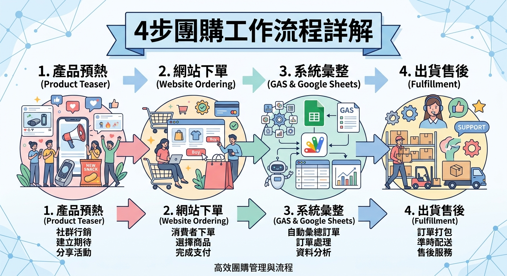
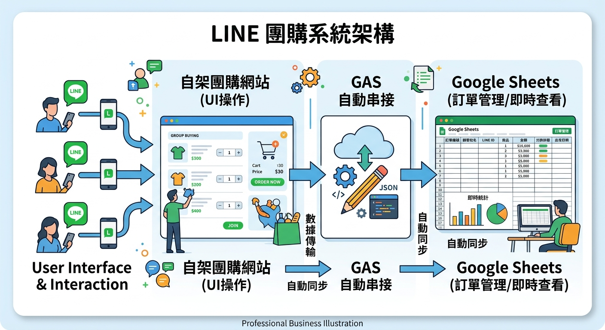
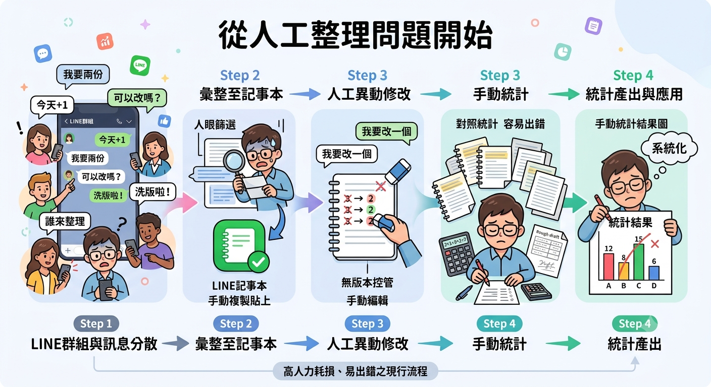
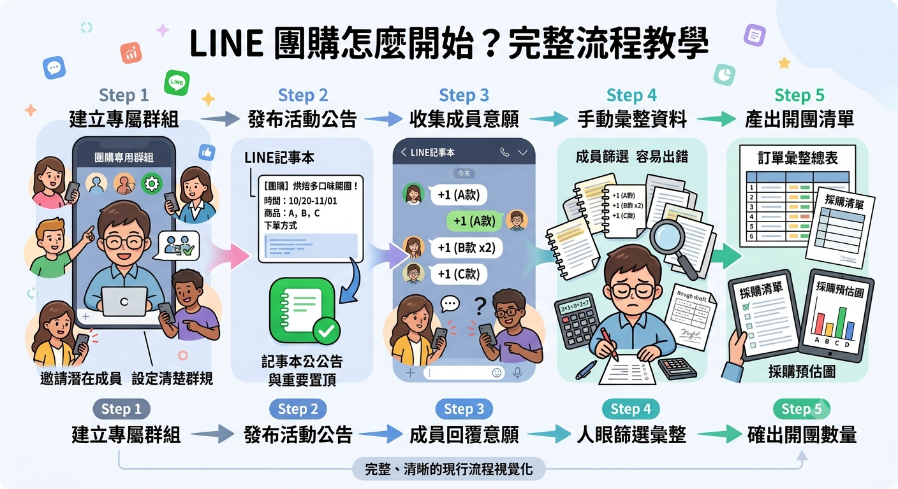
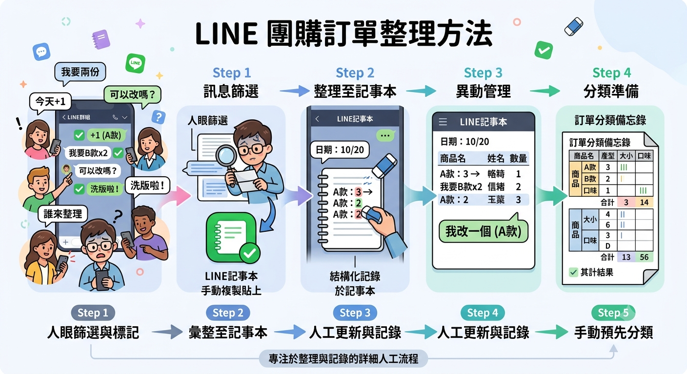
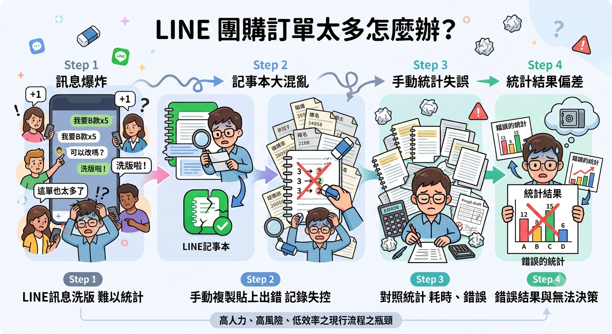
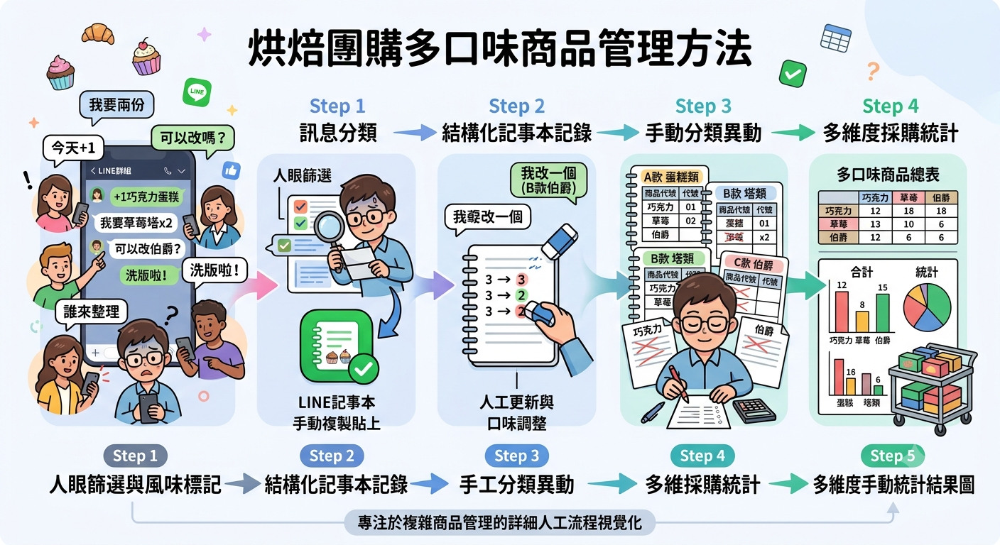
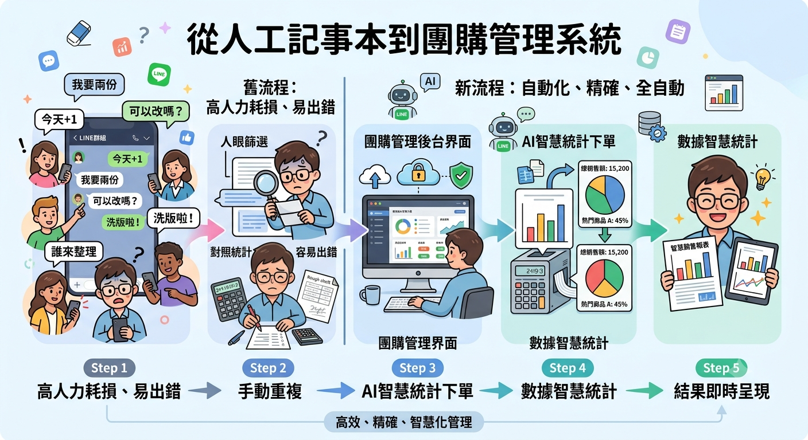

LINE 團購新手入門：從 0 開店到穩定開團的完整指南
在微型創業與副業經濟盛行的時代，LINE 已成為許多人踏出創業第一步的最佳選擇。藉由高普及率與即時互動性，新手無須投入鉅額資金購買設備或租賃店面，就能快速建立起屬於自己的社群團購生意。本文將從開團前準備、選品策略、免申辦官方帳號的輕量化架構，到標準營運流程，為你提供一份清晰實用的新手入門操作指引。

一、 開團前的基礎準備工作
許多人在開團初期容易感到迷茫，主要原因是缺乏明確的定位與營運基礎。在正式發布第一檔團購前，請先完成以下三項核心準備：
二、 挑選選品策略：提升顧客轉化與回購率
選品是團購能否成功的靈魂所在。新手切忌盲目追求高毛利而選擇冷門或過於昂貴的產品，應遵循「高頻次、剛需強、信任度高」的三大選品原則：
三、 基本營運流程介紹：從預熱到完結

一套流暢且可重複執行的營運流程，是打造穩定獲利模式的關鍵。一個完整的團購週期主要分為以下四個步驟：
結語
LINE 團購的核心在於「人與人之間的信任與分享」。對於新手而言，只要做好前期規劃、精準選品，並搭配高彈性且低成本的自架網站與 Google Sheet 自動化工具，就能從 0 到 1 輕鬆建立起專業且穩定獲利的團購事業。
團購主最常犯的 5 個經營錯誤！為什麼你的社群總是沒人下單？
許多團購賣家在剛成立社群時滿懷熱情，每天頻繁發布商品連結，卻發現群組迴響冷淡、甚至出現成員接連退群的窘境。經營 LINE 團購並非只是把商品貼出來就會有人下單，若踩到經營禁忌，很容易消耗顧客的信任與注意力。本文將為你解析 5 個常見的團購經營錯誤，並提供相應的優化對策。
一、 致命錯誤一與二：訊息洗版與盲目價格戰
這兩個問題是造成顧客退群與利潤流失的最主要原因：
三、 致命錯誤三與四：下單流程繁瑣與貼文缺乏真實體驗
當顧客有購買意願時，過於複雜的操作會瞬間澆熄他們的熱情：
五、 致命錯誤五：忽視售後服務與對帳效率

許多賣家以為收了錢發了貨就結束了，實際上售後才是回購的開始：
結語
避開這 5 個常見陷阱，將專注力放在「打造優質經營體驗」上。透過精準排版、親自體驗導購、簡單的下單 UI 與自動化後台管理，你的 LINE 團購社群就能大幅提升轉化率與黏著度。
Excel 記帳結單用到眼花？團購主自動化管理的 3 大轉型關鍵
當團購開團規模逐漸擴大，原本簡單的 Excel 記錄方式將會成為營運的最大瓶頸。深夜面對數十條 LINE 留言手動複製貼上、比對匯款末五碼，不僅極易出錯，更嚴重消耗團購主的體力與熱情。本文將為你剖析人工結單的潛在危機，並分享如何透過輕量化網頁與 Google Sheet 實現自動化轉型。
一、 手工結單帶來的隱形成本
看似免費的 Excel 記帳，實際上正在默默侵蝕你的時間與獲利：
二、 邁向自動化管理的 3 大轉型關鍵
擺脫人工噩夢無須昂貴系統，掌握三個關鍵即可輕鬆升級：
三、 轉型前後效益對比

結語
自動化管理的價值，在於將團購主從繁瑣的後勤工作中解放出來。透過自架網頁與 Google Sheet 的自動化結合，你可以用極低的成本獲得高效營運體驗。
團購選品策略：如何挑選高利潤、高回購率爆款？
選品決定了團購營運的成敗。許多新手賣家常苦惱於不知道該賣什麼，或是進了貨卻滯銷積壓資金。一個好的團購產品，必須兼具優良的毛利空間與強烈的消費需求。本文將揭密高回購率爆款商品的挑選原則、尋找優質供貨商的方法，以及合理的定價公式。
一、 爆款商品的 3 大選品黃金法則
挑選商品時，請優先以這三個角度評估潛力：
二、 尋找優質供貨商與定價公式
穩定的貨源與合理的利潤空間是永續經營的保障：
結語
好的選品能讓行銷事半功倍。掌握剛需與稀缺原則，搭配科學定價，就能持續推出讓團友瘋狂「+1」的熱銷爆款。
LINE 官方帳號 vs 社群 vs 群組：賣家該選哪一個？
許多團購賣家在剛開始規劃時，最常遇到的問題就是：「我到底該用 LINE 群組、LINE 社群，還是 LINE 官方帳號（Line Official Account）？」這三者在人數上限、匿名性、訊息成本及擴充功能上各有不同。本文將深度比較這三種管道的優缺點，幫助你做出最佳佈局。
一、 三大 LINE 渠道特性深度分析
了解不同管道的限制，才能根據營運階段選擇最合適的工具：
二、 最強輕量化組合策略：自架網站 + 社群/群組
如果不希望支付 LINE OA 高昂的推播費用，可以使用以下輕量化替代方案：
結語
沒有絕對最好的工具，只有最適合目前階段的組合。善用免費社群集客，搭配自架網頁導購，是最適合微型團購主的低成本高效率做法。
如何打造高互動 LINE 團購社群？5 個提升團友黏著度的社群經營技巧
一個成功的團購社群，絕非只有賣家單向發布廣告。只有當社群保持高互動與良好的討論氛圍時，顧客的黏著度與轉化率才會顯著提升。本文將分享 5 個實用的社群經營技巧，教你如何打造一個熱絡、有溫度且高回購率的 LINE 團購社群。
一、 營造溫度與專屬感的 3 個基礎技巧
從顧客加入社群的第一天起，就建立良好的第一印象：
二、 維持秩序與排版規範
良好的閱讀環境是長期經營的關鍵：
結語
社群經營的核心是「經營關係」。透過有溫度的互動與良好的規範，你的團購社群將成為顧客每天都想進來逛逛的溫馨天地。
告別洗版！LINE 團購如何優雅展示商品目錄與下單連結？
當團購品項逐漸增多時，在 LINE 群組中連續發布幾十張圖片與文字，極容易造成洗版，導致成員厭煩退群。如何讓顧客輕鬆瀏覽所有商品，同時保持社群介面的整潔？本文將介紹如何利用自架網頁 UI 打造優雅的商品目錄，提升瀏覽體驗與下單效率。
一、 洗版問題對團購營運的致命傷害
傳統訊息洗版帶來的負面影響：
二、 自架輕量網頁目錄的 3 大優勢
採用單頁式網頁 UI 展示商品是最佳解答：
結語
優雅的展示方式展現了賣家的專業度。透過輕量網頁目錄，讓顧客買得輕鬆，也讓你的團購社群質感躍升。
LINE 團購行銷心法：如何寫出讓人忍不住想下單的爆款文案？
同樣一款商品，為什麼有些團購主一發文就瞬間秒殺，有些人的貼文卻乏人問津？關鍵就在於「文案的感染力」。好的團購文案不需要華麗的詞藻，而是要精準打中顧客的痛點與需求。本文將揭密爆款文案的黃金公式與實戰範例。
一、 爆款團購文案的 4 階段黃金公式
依照這個結構撰寫，大幅提升文案吸引力：
二、 提升轉換率的文案小技巧
細節決定成敗：
結語
寫文案就是跟朋友分享好東西。只要掌握痛點與情境，搭配清晰的行動指引，你也能寫出高效轉化的熱銷文案。
團購金流全攻略：匯款、對帳、貨到付款與線上支付比較
金流處理是團購營運中最容易出錯且最耗時的環節。從傳統的銀行轉帳對帳，到超商取貨付款與第三方支付，不同的收款方式會直接影響顧客的下單意願與賣家的對帳負擔。本文將深度解析各種金流工具的優缺點，並提供最適合微型團購主的金流組合方案。
一、 常見團購金流工具優缺點分析
評估手續費、安全性與對帳便利性：
二、 高效低成本的金流組合建議
對於初期想要節省手續費的賣家：
結語
選擇合適的金流工具能有效降低壞帳率。結合自動化 Google Sheet 對帳紀錄，讓你輕鬆控管每一筆帳款。
團購出貨與物流管理：如何避免寄錯貨、漏寄與庫存混亂？
當團購結單完成、商品陸續到貨後，緊接而來的就是挑戰極大的「撿貨與出貨」階段。面對堆積如山的商品與不同買家的品項組合，人工撿貨極易出現寄錯商品或漏寄配件的情況。本文將分享標準化出貨 SOP 與庫存控管技巧，幫助你打造零失誤的出貨流程。
一、 出貨容易出錯的原因與預防措施
混亂往往源於缺乏標準作業程序：
二、 打造零失誤的出貨 4 步驟 SOP
按照流程執行，顯著提升撿貨速度：
結語
良好的物流管理是優質服務的終點。建立清晰的後台資料與出貨流程，不僅能防範出錯，更能提升客戶滿意度。
遭遇「棄單/棄單不取貨」怎麼辦？團購賣家的權益保障與預防機制
在社群團購經營中，最讓賣家心痛與無奈的莫過於「棄單」與「超商取貨不取」。這不僅會造成貨物積壓與運費損失，更會打亂備貨節奏。本文將解析棄單的預防機制、如何擬定合規的團購服務條款，以及遇到棄單時的合法應對步驟。
一、 預防棄單的 3 大事前機制
事前預防永遠比事後追討更有效果：
二、 遭遇棄單時的合法處理流程
保持理性並依照程序應對：
結語
健全的規則能保護賣家的努力。建立合規下單流程與防範機制，能讓你的團購事業經營得更安心順暢。
如何處理團購售後退換貨與瑕疵品問題？維繫顧客信任的應對 SOP
商品在運輸過程中受損、食品過期或寄錯規格等售後問題無法完全避免。面對顧客的抱怨與退換貨要求，處理得當能將危機化為轉機，讓顧客對你的專業與責任感倍增；處理不當則可能引發社群公關危機。本文將為你提供一套完整的售後客服 SOP。
一、 售後溝通的核心原則：同理心與迅速回應
處理客訴時的黃金原則：
二、 標準退換貨處理 3 步驟
建立條理分明的處理流程：
結語
負責任的售後服務是建立長期口碑的關鍵。用專業與誠意解決問題，危機也能變成鞏固顧客忠誠度的契機。
什麼時候該導入「團購管理系統」？團購主必須知道的 4 個關鍵轉折點
許多團購賣家在剛起步時習慣全靠人工處理，但隨著業務成長，後勤工作逐漸壓得自己喘不過氣。究竟什麼時候是從純人工升級到自動化管理系統的最佳時機？本文將為你剖析 4 個營運瓶頸轉折點，幫助你評估升級時機。
一、 評估升級的 4 個關鍵訊號
當出現以下狀況時，代表你的營運已經到了必須轉型的時刻：
二、 低成本的系統升級方案：自架 UI + GAS
無須負擔高昂月費的輕量化選擇：
結語
善用工具才能讓事業走得更遠。當瓶頸出現時，及時引進自動化管理，才能順利開啟事業的第二次成長曲線。
私域流量經營：如何把一次性團購顧客變成高頻回購的忠實 VIP？
開發一個新顧客的成本，是維繫舊顧客的 5 倍以上。在流量越來越貴的時代，如何將一次性購買的顧客留存下來，並轉化為長期回購的忠實粉絲，是團購能否持續獲利的關鍵。本文將探討私域流量經營心法與 VIP 制度設計。
一、 打造高回購率的 3 大顧客經營策略
讓顧客感受獨特價值與尊榮感：
二、 精準行銷勝過盲目推播
告別無差別廣告：
結語
深耕私域流量是團購經營的護城河。用心對待每一位顧客，讓他們成為你事業中最穩固的忠實後盾。
2026 團購市場趨勢分析：兼職副業到專職團購主的成長路徑
展望 2026 年，社群電商與微型團購的發展更加蓬勃，但也面臨著消費者需求多元化與技術門檻降低的轉型期。現代團購主該如何從一個兼職賺零用錢的副業，逐步成長為具備規模化營運能力的專職賣家？本文將分析未來趨勢與成長路徑。
一、 2026 年團購市場的 3 大核心趨勢
掌握未來市場脈動：
二、 從副業到專職的 3 階段成長藍圖
循序漸進的階段規劃：
結語
團購不僅是一份副業，更是低風險創業的最佳切入點。把握趨勢、善用數位工具，你也能打造出屬於自己的成功事業！
從 LINE 團購人工整理問題開始：團購管理系統的開發理念
許多團購經營者初期會使用 LINE 群組與記事本管理訂單， 但隨著商品種類與訂購人數增加，人工整理逐漸成為營運負擔。 本文分享開發 LINE 團購管理系統的原因， 以及如何透過系統改善傳統團購流程。

一、最初的團購管理方式
許多小型團購與烘焙工作室在開始經營時， 通常會選擇使用 LINE 作為主要訂購工具。
LINE 具有使用方便、客戶普及率高的優點， 不需要額外下載新的應用程式， 就能快速完成商品資訊分享與訂單收集。
當初期訂單數量較少時， 透過人工方式管理是可行的。
二、訂單增加後發現的管理問題
隨著團購次數增加， 商品種類、客戶數量與訂單內容也逐漸變得複雜。
原本簡單的 LINE 留言接單方式， 開始產生以下問題：
三、為什麼 LINE 記事本仍不足以解決問題？
為了改善訊息分散問題， 許多團購經營者會改使用 LINE 記事本整理訂單。
LINE 記事本確實比聊天訊息更容易查看， 但仍屬於人工管理方式。
當訂單增加後， 管理者仍需要花費大量時間進行：
四、為什麼開發團購管理系統？
因此，希望透過系統化方式， 將原本分散在 LINE 訊息、記事本與人工計算中的流程整合。
系統的設計理念不是取代 LINE， 而是延伸 LINE 在團購經營上的不足。
五、系統設計方向
1. 商品管理
解決傳統團購中商品資訊分散的問題。 管理者可以建立商品、口味與價格， 讓商品資料更加清楚。
2. 訂單管理
將原本散落在 LINE 訊息中的訂單， 集中保存於系統中。
3. 銷售分析
透過訂單資料整理， 協助管理者快速了解商品銷售狀況。
六、從人工流程到系統化流程
導入系統後， 原本需要人工處理的流程可以更加簡化。
七、開發這套系統的目的
開發 LINE 團購管理系統的目的， 是希望協助團購經營者降低重複整理工作， 將更多時間投入商品製作與客戶服務。
透過將團購流程數位化， 讓小型團購與烘焙工作室也能使用更有效率的管理方式， 逐步建立穩定的營運流程。
結語
LINE 是許多人開始團購經營時的重要工具， 但當規模逐漸成長後， 管理方式也需要跟著提升。
從 LINE 群組接單、 LINE 記事本整理， 到團購管理系統導入， 這不只是工具的改變， 而是讓團購流程更加清楚、有效率的改善。
LINE 團購怎麼開始？完整流程教學：從建立群組到完成訂單管理
LINE 是許多小型團購與烘焙工作室常用的銷售工具， 透過群組即可快速與客戶溝通與接收訂單。 本文介紹 LINE 團購完整流程，從建立群組、商品介紹、 客戶下單到訂單管理，協助初次經營團購者建立基本流程。

一、建立 LINE 團購群組
開始團購前，首先需要建立一個 LINE 群組， 作為商品資訊發布與客戶溝通的主要管道。
團購群組通常可以用於：
對於剛開始經營團購的商家來說， LINE 群組具有操作簡單、客戶容易使用的優點。
二、準備團購商品資訊
在開放訂購前，需要先整理完整的商品資訊， 讓客戶可以清楚了解販售內容。
常見商品資訊包含：
清楚的商品資訊可以降低客戶詢問次數， 也能減少後續整理訂單時的混亂。
三、客戶透過 LINE 留言下單
傳統 LINE 團購最常見的方式， 是讓客戶直接在群組中留言提供訂購內容。
這種方式適合初期訂單量較少的團購， 客戶不需要額外學習新的操作方式， 即可完成訂購。
四、整理與確認團購訂單
當客戶開始留言後， 管理者需要將訂購內容整理保存。
初期常見整理方式：
例如：
當訂單數量增加後， 單純依靠人工整理會需要花費更多時間。
五、確認商品製作數量
團購截止後，需要統計所有訂單， 確認實際製作數量。
正確統計商品數量， 對烘焙工作室尤其重要， 因為會直接影響食材準備與製作安排。
六、LINE 團購常見管理問題
LINE 適合快速開始團購， 但當訂單規模增加後， 可能會遇到以下問題：
七、從 LINE 團購逐步導入系統管理
當團購頻率增加或商品種類變多時， 可以將原本人工處理流程轉換為系統管理。
八、適合開始使用 LINE 團購的對象
LINE 團購適合以下類型的經營者：
結語
LINE 是開始團購經營時非常方便的工具， 可以快速建立與客戶之間的溝通管道。
不過，隨著訂單數量與商品種類增加， 管理方式也需要逐步改善。 從 LINE 群組接單，到使用訂單管理系統， 可以讓團購流程更加穩定，也降低人工整理負擔。
LINE 團購訂單整理方法：從群組訊息、記事本到系統管理
LINE 團購初期可以透過群組快速接收訂單， 但隨著訂單數量增加，容易遇到訊息分散、人工統計困難等問題。 本文整理常見訂單整理方式，以及如何逐步改善團購管理流程。

一、LINE 群組接單的優點與限制
許多小型團購或烘焙工作室在初期會使用 LINE 群組作為主要接單方式。 客戶只需要在群組中留言，即可完成訂購，不需要額外學習新的操作方式。
例如：
這種方式適合訂單數量較少的情況， 但當團購人數增加後，訂單容易被後續聊天訊息覆蓋， 管理者需要花費更多時間重新搜尋與整理。
二、使用 LINE 記事本整理訂單
為了解決 LINE 群組訊息分散的問題， 許多團購經營者會改用 LINE 記事本集中記錄訂單內容。
例如整理成：
LINE 記事本比直接搜尋聊天紀錄更加方便， 可以快速查看目前訂購內容。
不過，記事本仍然屬於人工管理方式， 當客戶修改訂單或增加商品時， 管理者仍需要手動更新資料。
三、人工整理訂單常見問題
當團購規模逐漸增加，人工整理通常會遇到以下問題：
四、使用 Excel 管理團購訂單
部分團購經營者會將訂單轉移至 Excel， 利用表格方式管理客戶、商品與數量。
Excel 可以協助計算數量， 但仍需要人工輸入訂單資料。 當商品種類與訂單增加時，維護成本也會提高。
五、導入團購管理系統改善流程
當團購訂單達到一定規模後， 可以將原本人工整理流程改為系統化管理。
六、如何選擇適合自己的管理方式？
不同團購規模適合不同管理方式：
如果每天需要花費大量時間整理訂單， 或經常遇到數量統計錯誤， 就代表目前的管理方式可能需要升級。
結語
LINE 是方便快速的團購工具， 適合初期建立客戶關係與收集訂單。 但隨著商品種類與訂單數量增加， 單純依靠聊天訊息或記事本管理， 會逐漸產生整理上的負擔。
透過適合的訂單管理方式， 可以降低人工整理時間， 讓團購流程更加穩定且有效率。
LINE 團購訂單太多怎麼辦？從人工整理到系統化管理的方法
LINE 團購初期使用群組留言即可快速完成接單， 但當訂單數量增加後，容易遇到訊息混亂、訂單遺漏、 商品數量統計困難等問題。本文介紹團購規模增加後， 如何改善訂單管理流程。

一、為什麼 LINE 團購訂單增加後會變困難？
LINE 是許多團購經營者最常使用的工具， 因為客戶不需要額外下載 App，也能快速透過留言完成訂購。
但是當團購人數增加後， 原本簡單的留言接單方式會逐漸產生管理問題。
二、訂單增加後常見的管理問題
當團購規模擴大後，管理者通常會遇到以下問題：
三、使用 LINE 記事本能解決問題嗎？
當訂單開始增加時， 許多團購經營者會改用 LINE 記事本整理訂單。
例如：
LINE 記事本確實能改善訊息分散問題， 但仍然需要人工維護。
當訂單數量更多時， 管理者仍需要花費時間：
四、團購訂單管理改善方式
要改善團購管理流程， 可以從以下幾個方向開始：
方法一：建立固定訂購格式
要求客戶依照固定格式留言， 例如：
可以降低人工整理難度， 但仍需要後續人工統計。
方法二：使用表格管理訂單
將訂單整理至 Excel 或 Google Sheet， 方便查看商品數量。
適合中小型團購， 但訂單增加後仍需要人工輸入。
方法三：導入團購管理系統
當團購頻率提高或商品種類增加時， 可以將訂購流程系統化。
五、什麼情況適合使用團購管理系統？
並不是所有團購都需要系統， 可以依照目前遇到的問題判斷。
六、系統化管理後可以改善什麼？
導入團購管理系統後， 可以將原本分散的訂單資訊集中管理。
管理者可以更快速查看目前訂單狀況， 並依照商品銷售結果安排製作與備料。
結語
LINE 是非常適合開始團購的工具， 但當訂單量逐漸增加時， 管理方式也需要同步調整。
從人工整理、LINE 記事本， 到導入團購管理系統， 是許多團購經營者在成長過程中會遇到的管理轉變。
找到適合目前規模的管理方式， 才能降低整理成本， 讓團購流程更加穩定。
了解 LINE 團購管理系統如何改善訂單流程烘焙團購多口味商品管理方法：避免人工統計錯誤
烘焙團購常有不同口味、規格與價格組合， 當訂單增加後，單靠 LINE 訊息整理容易造成統計困難。 本文介紹多口味商品的管理方式，以及如何建立更有效率的團購流程。

一、為什麼烘焙團購特別需要商品管理？
與一般商品不同，烘焙類團購通常會有較多變化， 例如不同口味、尺寸、包裝方式或優惠組合。
例如同一款蛋糕可能包含：
當商品選項增加後， 管理者需要處理更多訂購組合， 也提高人工整理的難度。
二、使用 LINE 接單時常見的商品管理問題
在傳統 LINE 團購中， 客戶通常會使用文字留言方式訂購。
這類自由格式留言雖然方便客戶， 但管理者後續需要人工判斷：
當訂單數量增加時， 容易發生以下情況：
三、建立清楚的商品分類方式
管理多口味商品時， 建議將商品資訊拆分管理。
透過清楚分類， 可以讓管理者更容易掌握每個商品選項的銷售狀況。
四、人工統計多口味訂單的困難
當團購結束後， 管理者通常需要重新整理所有訂單。
如果訂單數量增加， 這個流程可能需要花費大量時間， 同時也增加人工計算錯誤的機率。
五、使用系統管理多口味商品
透過團購管理系統， 可以將商品資訊提前建立， 讓客戶下單時直接選擇商品與口味。
客戶完成選擇後， 系統可以直接保存訂購內容， 管理者不需要再從聊天紀錄中重新確認。
六、多口味商品管理可以帶來哪些改善？
管理者可以快速確認：
這些資訊也能協助烘焙工作室提前安排：
七、適合導入商品管理系統的情況
如果目前遇到以下情況， 就代表商品管理方式可能需要改善：
結語
烘焙團購最大的特色就是商品變化多， 從單一商品發展到多口味、多規格後， 管理方式也需要同步提升。
透過清楚的商品分類與訂單管理流程， 可以降低人工整理負擔， 讓團購經營者更專注於商品製作與服務品質。
實際案例：從 LINE 記事本到團購管理系統，改善人工訂單整理流程
許多小型團購初期會使用 LINE 群組與記事本管理訂單， 但隨著商品種類與訂購人數增加，人工整理逐漸變得困難。 本案例分享如何將傳統 LINE 團購流程導入系統管理， 提升訂單整理與商品統計效率。

一、團購初期遇到的問題
在團購開始階段，使用 LINE 群組接收訂單是一種快速且方便的方式。 客戶可以直接留言商品、口味與數量， 管理者也能立即看到訂購需求。
但隨著團購次數增加，以及商品種類變多後， 原本簡單的留言方式逐漸產生管理上的問題。
二、原始人工團購流程
傳統團購通常會經歷以下流程：
為了方便管理， 許多團購經營者會將訂單從聊天訊息整理到 LINE 記事本。
雖然記事本比聊天紀錄更容易查看， 但仍需要人工維護資料。
三、人工管理流程遇到的問題
當訂單數量增加後， 管理者會遇到以下問題：
四、導入團購管理系統
為改善人工整理問題， 將原本分散的團購流程整合至管理系統。
客戶仍然可以透過熟悉的 LINE 使用服務， 管理者則能透過後台查看完整訂單資料。
五、系統功能介紹
1. 商品管理
管理者可以建立不同商品， 並設定商品名稱、口味與價格。
避免過去需要從文字訊息中判斷商品內容。
2. 訂單管理
所有客戶訂購資料集中保存， 管理者可以快速查看目前團購訂單。
當客戶需要修改內容時， 也能直接更新訂單資料。
3. 銷售分析
系統將訂單資料整理成統計資訊， 協助管理者了解商品銷售狀況。
可作為後續備料與製作安排的參考。
六、導入前後流程比較
七、實際改善效果
導入系統後，團購管理流程可以獲得以下改善：
八、適合導入團購系統的對象
以下類型的經營者，可以考慮導入系統：
結語
LINE 是團購經營很好的開始， 但當訂單量與商品種類增加後， 管理方式也需要同步提升。
從 LINE 群組接單、 LINE 記事本整理， 到導入團購管理系統， 不只是工具改變， 而是讓整個團購流程更加穩定與有效率。